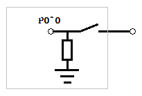
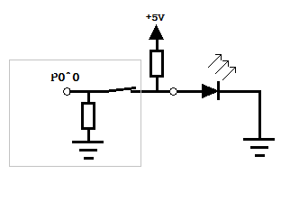

在学51单片机时，经常会听说P0口需要加入一个上拉电阻。往往开发板或者最小系统板上已经自带了一个排阻，于是初学者不明就里地使用。我当年也是这样一个初学者，只知道需要加一个上拉电阻，然而却不知道上拉电阻的作用是什么，为什么需要上拉电阻。
先来看一下单片机P0口上某一个引脚内部的简化图：

灰色框内是单片机内部，当通过指令设置 P0^0=1时，可以理解为开关断开，而当通过指令设置P0^0=0时，可以理解为开关闭合。
如果现在想要通过P0^0引脚来控制一个LED灯的亮灭，那么很简单，LED灯的正极接P0^0引脚，负极接地，如图：


图示的样子即为P0^0=1（断开）时与P0^0=0（闭合）时的情景。
那么问题就来了，当P0^0=0时，确实符合我们的需求，即让LED灭（因为两端都是低电平），但是，当P0^0=1时，LED的负极接地，而正极悬空！这种情况下，LED照样是灭的。
怎么办？这时就需要用到上拉电阻了。
如果我们在P0^0引脚上接上一个电阻，这个电阻一端连接引脚，另一端连接电源正极，那么问题迎刃而解。看图：


这样的话，当P0^0=1时，相当于一个上拉电阻和LED灯串联在电源和地线之间，LED发光，当P0^0=0时，电路相当于单片机内阻和LED并联后再和上拉电阻串联。由于单片机内阻相对LED的电阻而言很小，所以LED相当于被短路，所以不亮（其实还是有一点微弱的电流的，只是可以忽略）。
一言以蔽之，上拉电阻的作用，就是把引脚的高阻态（悬空态）变成高电平态。